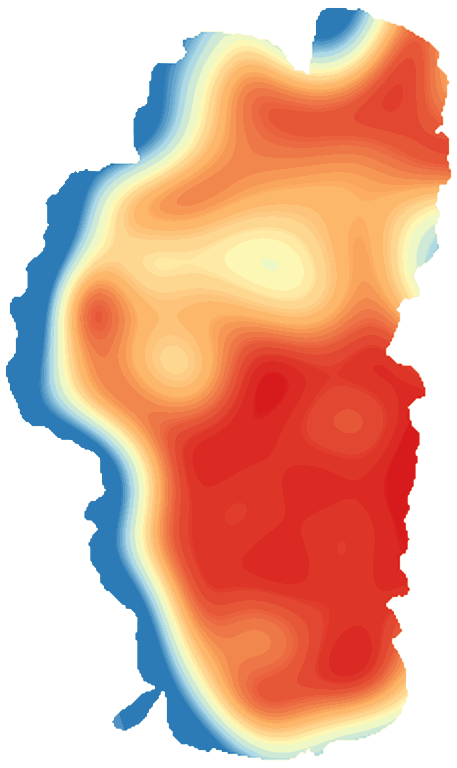

LakeScope › CA
Lake Tahoe today
Updated 2026-11-21 - Atlas Labs
Clear water, 50°F water, level steady, near normal, calm this morning.
Water level
6229.46 ft
USGS gauge 10337000 - 2026-11-21
7-day trend: steady (+0.09 ft). Compared with normal for this date: -0.2 ft (same weeks, 2016-2025).
Water clarity and algae
Clear water Last clear view: about a week ago. 1 cloudy pass since.
Surface temperature
50°F
seen from space on 2026-11-18

Ice
Open - 0% ice cover
Estimate from weather and satellite, not a measurement. Check the ice yourself before going on it.
Weather, next 3 days
| Day | Sky | High / low | Wind | Rain |
|---|---|---|---|---|
| Saturday | Mostly Sunny | 39 / 32°F | 5 mph SW | 2% |
| Sunday | Light Snow | 36 / 30°F | 10 mph SW | 78% |
| Monday | Mostly Sunny | 37 / 33°F | 5 mph SW | 2% |
Sunrise 06:50 - sunset 16:41 - Waxing gibbous. National Weather Service.
Get the LakeScope app: alerts and the 3-D view of Lake Tahoe